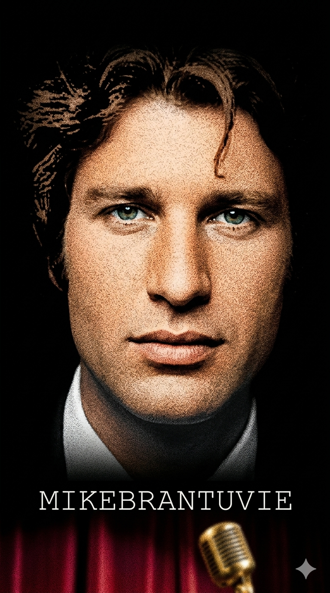

מייק בראנט
Moshé Michael Brand
ניתוח אטימולוגי מקיף של השמות
משה (Moshé)
שמו הראשון הוא שם מקראי עברי מובהק. האטימולוגיה המקראית מציינת את המילים "כי מן המים משיתיהו". בשפה המצרית העתיקה, השורש msy פירושו "ילד" או "נולד". משה היה שמו של אביו של פישל (אביו של מייק), שנספה בשואה, והשם ניתן לו כפעולת הנצחה עמוקה המאפיינת משפחות של שורדי שואה.
מיכאל (Michael)
שם עברי המורכב מהשאלה הרטורית "מי כאל?". המשמעות היא "מי הוא כמו אלוהים?", המביעה ענווה והערצה לכוח עליון. מיכאל הוא אחד המלאכים המרכזיים במסורת היהודית, הנחשב למגן של עם ישראל. השם "מייק" (Mike) הוא הגרסה הבינלאומית המקוצרת לשם זה, שאומצה על ידו כדי להקל על הקהל הזר.
ברנד / בראנט (Brand / Brant)
שם המשפחה המקורי Brand הוא ממוצא יהודי-אשכנזי (גרמנית/יידיש), שמשמעותו "אש" או "שריפה". בעת הפריצה לצרפת ב-1970, הוצע לו לשנות את איות השם ל-Brant. השינוי נועד להעניק לשם צליל קשיח, מודרני וצרפתי יותר, תוך שמירה על השורש המקורי. האש שבשמו סימלה בצורה אירונית את הקריירה הבוערת והקצרה שלו.
ילדות בצל השואה והשתיקה הגדולה
לידה במחנה מעצר: מייק בראנט נולד ב-1 בפברואר 1947 בנמל פמגוסטה שבקפריסין. הוריו, פישל וברוניה ברנד, היו שורדי שואה שניסו להעפיל לארץ ישראל בספינת המעפילים "תיאו", אך נתפסו על ידי הבריטים ונשלחו למחנות המעצר בקפריסין. הלידה בתנאי המחסור הקיצוניים סימנה את תחילתם של חיים מלאי נדודים ומאבק.
השתיקה בחיפה: המשפחה עלתה ארצה ב-1947 והשתקעה בחיפה. פרט מרתק בילדותו של מייק הוא שהוא לא דיבר כלל עד גיל 5. הוריו חששו שהוא חירש-אילם, אך התברר כי הילד פשוט בחר לשתוק. כשהחל לדבר בסופו של דבר, הוא התחיל מיד לשיר. המוזיקה הייתה עבורו השפה שבה מצא את הקול שחסר לו בילדותו המוקדמת.
המרד והגיטרה: מייק לא היה תלמיד מצטיין ונטה להסתבך. בגיל 11 הצטרף למקהלת בית הספר, אך את רוב זמנו בילה בנגינה על גיטרה בחוף הים של חיפה. בגיל 15 כבר הופיע בלהיטי רוקנרול במועדונים המקומיים ובבתי מלון, תוך שהוא מחקה בכישרון פנומנלי את אלביס פרסלי וטום ג'ונס, עוד לפני שלמד מילה אחת באנגלית או בצרפתית.
אידאולוגיה אמנותית והישגי ענק
הטרובדור של האהבה הטוטאלית: האידאולוגיה של מייק בראנט הייתה "התמסרות מוחלטת לרגש". הוא לא שר שירים קלילים, הוא שר המנונים של כאב, אהבה ותשוקה. הוא האמין שהזמר הוא מתווך של נשמה, ולכן הופעותיו היו דרמטיות, עם קול טנור עוצמתי שחדר את כל המחסומים התרבותיים. הוא ייצג את ה"חיים על הקצה" – רגש חשוף ללא מסכות.
הישג - כיבוש צרפת בזמן שיא: מייק הגיע לפריז ב-1969 ללא ידיעת השפה. בתוך פחות משנה, עם הלהיט "Laisse-moi t'aimer", הוא הפך לאמן המושמע ביותר בצרפת. הוא היה האמן הזר הראשון שהצליח להדיח את השאנסונרים הוותיקים מראש המצעדים ולמכור מיליוני עותקים בפרק זמן כה קצר.
הישג - סמל תרבות חוצה יבשות: מייק בראנט הפך לגשר תרבותי חי בין ישראל לצרפת. גם בשיא תהילתו העולמית, הוא הקפיד לחזור לישראל (במיוחד במלחמת יום הכיפורים להופיע בפני חיילים). הוא נותר עד היום הזמר הישראלי המצליח ביותר בכל הזמנים בזירה הבינלאומית, עם מכירות המוערכות בכ-40 מיליון אלבומים.
חמשת היצירות הגדולות (יוטיוב)
• מקורות למחקר המעמיק:
- Mike Brant: La voix du sacrifice - ביוגרפיה מקיפה מאת ז'אן רנאר (Jean Renard).
- ארכיוני ה-INA הצרפתי - תיעוד הופעותיו הטלוויזיוניות והראיונות בשיא הצלחתו.
- Laisse-moi t'aimer - סרט דוקומנטרי של ארז לאופר על חייו וסופו הטראגי.
- ארכיוני נמל אליס איילנד וקפריסין - לתיעוד מסע ההעפלה של משפחת ברנד.